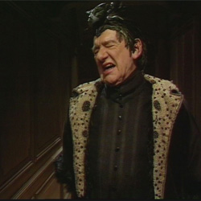

| HOME | The Doctors | The Companions | The Villians |
|
|||
|
Black Guardian The Black Guardian is a character in the long-running British science fiction television series Doctor Who. He was played by Valentine Dyall. The Black Guardian is an anthropomorphic personification of the forces of entropy and chaos, the counterpart of the White Guardian, a personification of order. The two Guardians balance out the forces in the universe, although the Black Guardian seems to desire to upset the balance in favour of chaos and evil while the White Guardian prefers to maintain the status quo. The Guardians both appeared in Season 16 of the programme, where all six serials of that season were linked together in the quest for the Key to Time, an artifact of immense power that would give the wielder supreme power over all existence. |